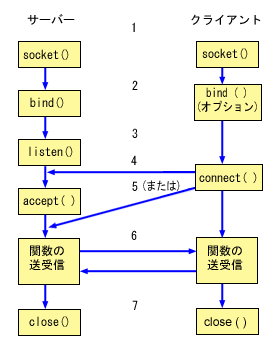
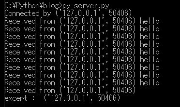
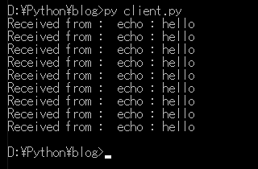

[Python] 18. ネットワーク(Socket)通信する方法
こんにちは。明月です。
この投稿はPythonでネットワーク(Socket)通信する方法に関する説明です。
プログラムでネットワーク通信することはソケット通信といいます。ネットワーク通信はプログラムとプログラム間に通信することやPCとPC間に通信するという意味です。
ソケットはPythonだけではなく、他のプログラム言語でも同じ通信標準です。
基本的にソケット通信流れは下記とおりになります。

ソケット通信はサーバーとクライアントがあります。サーバーはソケット接続を待っているもの(Listen)です。クライアントは接続を待っているサーバーに接続するものです。
つまり、サーバーがListen状況になっているとクライアントがサーバーにconnectionします。そうするとサーバー側はacceptが発生してサーバーとクライアントがSendとReceiveでデータを送受信します。
データを送受信するデータタイプはバイナリ(byte)タイプになります。
# ソケットを使うためにsocketモジュールをimportするべきだ。
import socket, threading
# binder関数はサーバーからacceptしたら生成されるsocketインスタンスを通ってclientからデータを受信するとecho形で再送信するメソッドだ。
def binder(client_socket, addr):
# コネクションになれば接続アドレスを出力する。
print('Connected by', addr)
try:
# 接続状況でクライアントからデータ受信を待つ。
# もし、接続が切れちゃうとexceptが発生する。
while True:
# socketのrecv関数は連結されたソケットからデータを受信を待つ関数だ。最初に4byteを待機する。
data = client_socket.recv(4)
# 最初4byteは転送するデータのサイズだ。そのサイズはlittleエンディアンでbyteからintタイプに変換する。
length = int.from_bytes(data, "little")
# データを受信する。上の受け取ったサイズほど
data = client_socket.recv(length)
# 受信されたデータをstr形式でdecodeする。
msg = data.decode()
# 受信されたメッセージをコンソールに出力する。
print('Received from', addr, msg)
# 受信されたメッセージの前に「echo:」という文字を付ける。
msg = "echo : " + msg
# バイナリ(byte)タイプに変換する。
data = msg.encode()
# バイナリのデータサイズを計算する。
length = len(data)
# データサイズをlittleエンディアンタイプのbyteに変換して転送する。
client_socket.sendall(length.to_bytes(4, byteorder="little"))
# データをクライアントに転送する。
client_socket.sendall(data)
except:
# 接続が切れちゃうとexceptが発生する。
print("except : " , addr)
finally:
# 接続が切れたらsocketリソースを返却する。
client_socket.close()
# ソケットを生成する。
server_socket = socket.socket(socket.AF_INET, socket.SOCK_STREAM)
# ソケットレベルとデータタイプを設定する。
server_socket.setsockopt(socket.SOL_SOCKET, socket.SO_REUSEADDR, 1)
# サーバーは複数ipを使っているPCの場合はIPを設定して、そうではない場合はNoneや''で設定する。
# ポートはPC内で空いているポートを使う。cmdにnetstat -an | find "LISTEN"で確認できる。
server_socket.bind(('', 9999))
# server設定が完了すればlistenを開始する。
server_socket.listen()
try:
# サーバーは複数クライアントから接続するので無限ループを使う。
while True:
# clientから接続すればacceptが発生する。
# clientソケットとaddr(アドレス)をタプルで受け取る。
client_socket, addr = server_socket.accept()
# スレッドを利用してclient接続を作って、またaccept関数に行ってclientを待機する。
th = threading.Thread(target=binder, args = (client_socket,addr))
# スレッド開始
th.start()
except:
# コンソール出力
print("server")
finally:
# エラーが発生すればサーバーソケットを閉める。
server_socket.close()
上の例をソケットサーバーソースです。
基本的にbindしてlistenでクライアントを待機します。その後、acceptが発生すればスレッドでクライアントソケットを渡してメッセージ受信を待機します。
binder関数では受信するデータサイズ、データ受信、echoを付けたデータのサイズを送信、echoデータ送信順の流れで繰り返しています。
thread環境で作ったので接続が切れなくても別のスレッドでクライアントを待つことができます。
# ソケットを使うためにsocketをimportするべきだ。
import socket
# 127.0.0.1のIPはローカルの意味だ。
HOST = '127.0.0.1'
# ポートはサーバーで設定した9999に接続する。
PORT = 9999
# ソケットを生成する。
client_socket = socket.socket(socket.AF_INET, socket.SOCK_STREAM)
# connect関数でサーバーに接続する。
client_socket.connect((HOST, PORT))
# 10回のループでsend、receiveをする。
for i in range(1,10):
# メッセージはhelloで送信
msg = 'hello'
# メッセージをバイナリ(byte)タイプに変換する。
data = msg.encode()
# メッセージのサイズを計算する。
length = len(data)
# データサイズをlittleエンディアンタイプに変換してサーバーに送信する。
client_socket.sendall(length.to_bytes(4, byteorder="little"))
# データを送信する。
client_socket.sendall(data)
# サーバーからデータサイズを受信する。
data = client_socket.recv(4)
# データサイズはlittleエンディアンタイプでintタイプに変換する。
length = int.from_bytes(data, "little")
# データを受信する。
data = client_socket.recv(length)
# データをエンコードしてstrタイプに変換する。
msg = data.decode()
# コンソールに出力する。
print('Received from : ', msg)
# ソケットリソースを返却する。
client_socket.close()
上の例をソケットクライアントソースです。
まず、サーバーを起動してクライアントを接続します。


クライアントからサーバーに接続してhelloというメッセージを10回にループで転送しました。サーバーには10回のhelloというメッセージを受信してecho :という文字を付けてecho : helloというメッセージをクライアントに転送しました。
その結果クライアントにはecho: helloが10回にコンソールに出力されました。
ソケットインスタンスを生成する時socket.AF_INETとsocket.SOCK_STREAMを使いましたが、socket.AF_INETはIP4インターネットを使うという意味だし、socket.SOCK_STREAMはデータをバイナリ(byte stream)タイプに使うという意味です。
AF_INET以外にAF_INET6、AF_UNIX、AF_CAN、AF_PACKET、AF_RDSのオプションがありますが、私も使ったことがないので具体的に知りません。AF_INET6だけはIP6インターネットだと思います。
インターネットアドレスタイプオプションみたいですが、一般的なプログラムならsocket.AF_INETだけで十分だと思います。
socket.SOCK_STREAMは連結指向性(TCP)という意味で、似ているなオプションではsocket.SOCK_DGRAM、socket.SOCK_RAW、socket.SOCK_RDM、socket.SOCK_SEQPACKETがあります。
SOCK_DGRAMは非連結指向性(UDP)だし、SOCK_RAWはソケットヘッダ情報まで取得する時に使うオプションです。
ソケットラベルにはSOL_SOCKET、IPPROTO_TCP、IPPROTO_UDPを使えます。
特にSOL_SOCKETの場合、ヘッダーレベルオプションをプロトコル側で設定するオプションです。
| オプション値 | データタイプ | 説明 |
|---|---|---|
| SO_BROADCAST | BOOL | broadcastメッセージを送信可能にします。 |
| SO_DEBUG | BOOL | デバッグ情報をレコードします。 |
| SO_DONTLINGER | BOOL | ソケットを閉める時メッセージ送受信が終わるまでブロックされないようにします。 |
| SO_DONTROUTE | BOOL | ルーティングせずに、直接にインターフェースを送信します。 |
| SO_OOBINLINE | BOOL | OOBデータを転送設定する時、一般入力キューからデータを読み取ることができるようにします。このフラグを付けるとrecv(:12)やsend(:12)でMSG_OOBフラグを使う必要なく、OOBデータを読み取られます。 |
| SO_GROUP_PRIORITY | int | 使わないフラグです。 |
| SO_KEEPALIVE | BOOL | Keepalivesを転送します。 |
| SO_LINGER | struct LINGER | ソケットを閉める時、転送データがある場合、データ処理ルール |
| SO_RCVBUF | int | データを受信するため、バッファ設定を明示 |
| SO_REUSEADDR | BOOL | もう使ったアドレスを再使用(bind)するようにする。 |
| SO_SNDBUF | int | データ送信するため、バッファ設定を明示/td> |
私の場合は特別なことがなければsocket.AF_INETとsocket.SOCK_STREAMの設定でSOL_SOCKET + SO_REUSEADDR, IPPROTO_TCP + TCP_NODELAYの形でソケット通信をします。
ここまでPythonでネットワーク(Socket)通信する方法に関する説明でした。
ご不明なところや間違いところがあればコメントしてください。
- [Python] 18. ネットワーク(Socket)通信する方法2020/06/18 19:53:56
- [Python] 17. スレッド(Thread)とロック(lock)、そしてデッドロック(deadlock)2020/06/18 00:19:45
- [Python] 16. IO(ファイル読み取り、書き込み)を扱う方法2020/06/16 18:37:00
- [Python] 15. クラスを継承する方法2020/06/15 18:20:07
- [Python] 14. クラスプロパティ(Property)2020/06/12 17:45:13
- [Python] 13. クラス関数(class method)とダック・タイピング、そして特殊メソッド2020/06/11 19:42:29
- [Python] 12. クラス(Class)を使う方法2020/06/10 19:33:33
- [Python] 11. デコレーター（Decorator）を使う方法2020/06/09 17:27:18
- [Python] 10. モジュールとパッケージ(import)2020/06/08 19:07:50
- [Python] 09. 例外処理する方法2020/06/05 17:11:47
- [Python] 08. ジェネレータ(Generator)2020/06/04 18:46:08
- [Python] 07. globalとnonlocal2020/06/03 20:34:49
- [Python] 06. 関数(function) - インライン関数、callbak、ラムダ(lambda)そしてクロージャ2020/06/02 20:51:22
- [Python] 05. コンプリヘンション(Comprehension)を使用する方法2020/06/01 19:38:58
- [Python] 04. 制御文(if, while, for, break, continue)とインデント2020/05/29 21:09:08
- [Python] 18. ネットワーク(Socket)通信する方法2020/06/18 19:53:56
- [Python] 17. スレッド(Thread)とロック(lock)、そしてデッドロック(deadlock)2020/06/18 00:19:45
- [Python] 16. IO(ファイル読み取り、書き込み)を扱う方法2020/06/16 18:37:00
- [Python] 15. クラスを継承する方法2020/06/15 18:20:07
- [Python] 14. クラスプロパティ(Property)2020/06/12 17:45:13
- [Python] 13. クラス関数(class method)とダック・タイピング、そして特殊メソッド2020/06/11 19:42:29
- [Python] 12. クラス(Class)を使う方法2020/06/10 19:33:33
- [Python] 11. デコレーター（Decorator）を使う方法2020/06/09 17:27:18
- [Python] 10. モジュールとパッケージ(import)2020/06/08 19:07:50
- [Python] 09. 例外処理する方法2020/06/05 17:11:47
- [Python] 08. ジェネレータ(Generator)2020/06/04 18:46:08
- [Python] 07. globalとnonlocal2020/06/03 20:34:49
- [Python] 06. 関数(function) - インライン関数、callbak、ラムダ(lambda)そしてクロージャ2020/06/02 20:51:22
- [Python] 05. コンプリヘンション(Comprehension)を使用する方法2020/06/01 19:38:58
- [Python] 04. 制御文(if, while, for, break, continue)とインデント2020/05/29 21:09:08